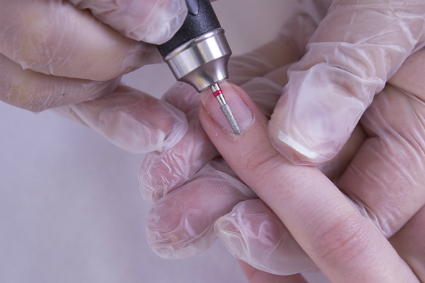

Виды мникюра
Самым безопасным видом маникюра является европейский маникюр, такая техника выполнения подойдёт людям с диабетом и псариазом.
Классический маникюр с ремувером имеет немного отличий от маникюра режущими инструментами, он отличается только тем, что используют ремувер для большего размягчениях ороговевших участков кожи.
Аппаратный маникюр является популярным видом маникюра на данный момент, выполнение заключается в использовании только фрез, без режущих инструментов.
